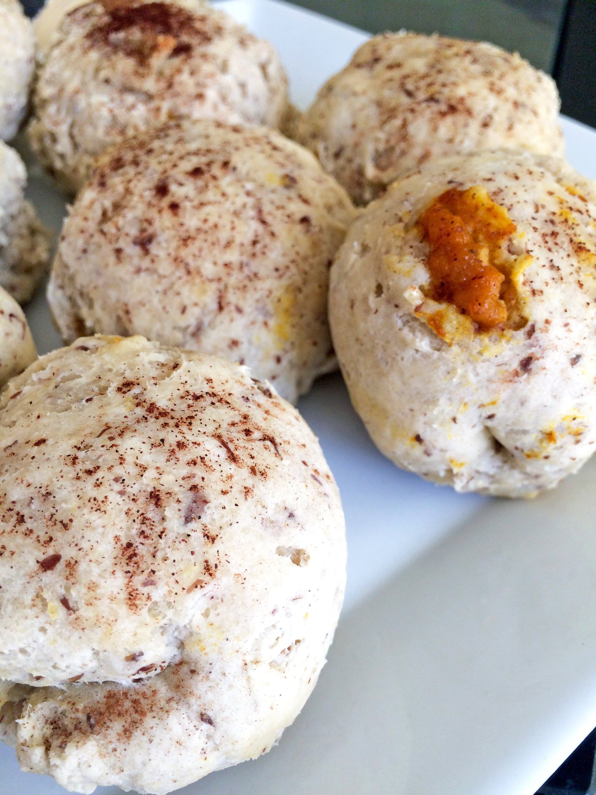
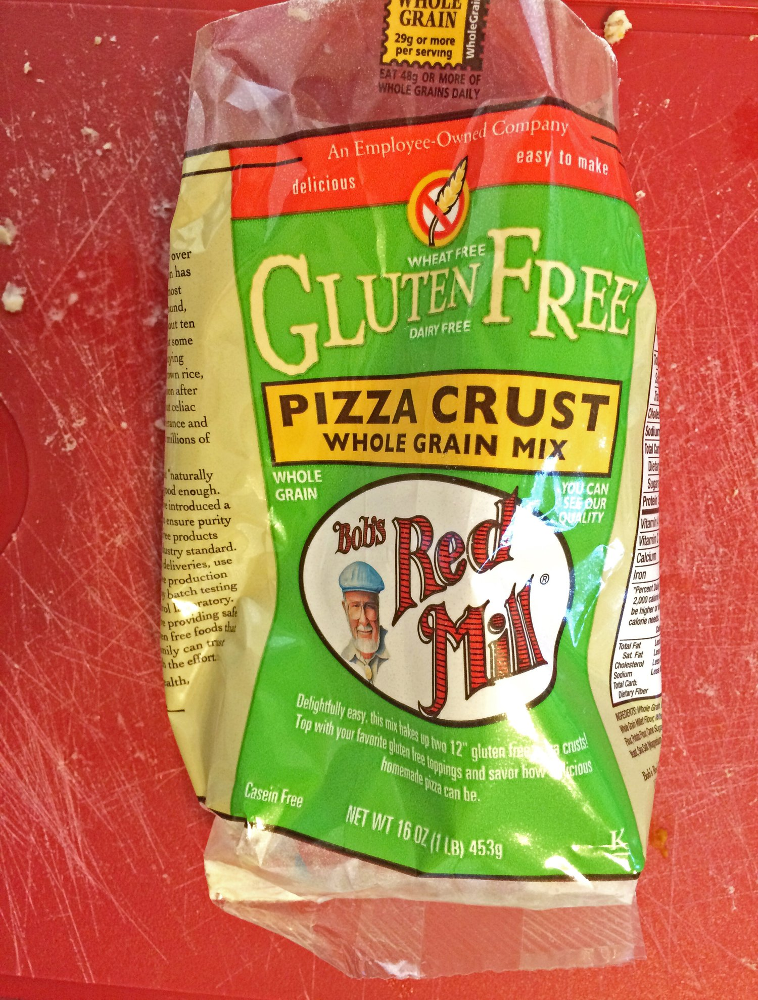
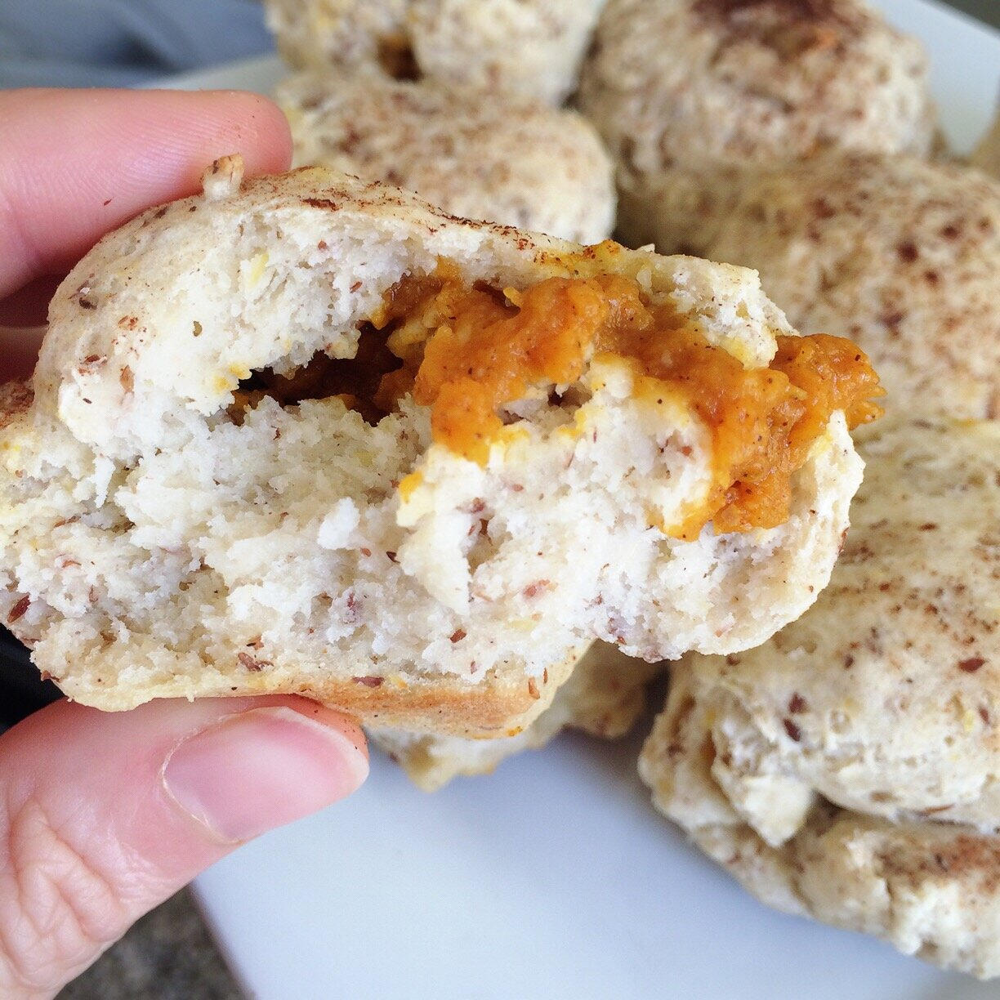

Pumpkin Stuffed Dough Balls (vegan, gluten free)


I posted a bunch of recipes I have my eyes on, and I've been drooling over them ever since. So I picked my top 4, created a shopping list of ingredients, and got it all yesterday! First on the list, pumpkin stuffed dough balls!! I based the recipe off of this one by Little Bits Of, but veganized and gluten-freed it. Heh. Like my verbs? Me too.
The DOUGH aspect is what got me. So, my boyfriend loves pizza. A lot. I think most people really love pizza? Personally, I've never been a fan. Growing up, I was the trouble child at birthday parties because I hated pizza and hated carbonated drinks (soda). Yeah, I don't know either. But I'm still sort of this way. I grew to like pizza in college, only because it was FREE every-freaking-where we went. But truthfully I'm not crazy over it. Plus now, I can't have most pizzas because of the cheese (dairy).WHAT I DO LOVE THOUGH IS THE CRUST. Right so back on topic - my boyfriend loves pizza and got this crazy pizza the other night from a chain here called Papa Murphy's, does anybody else have these? I never saw one until I moved to Washington. You buy the pizza uncooked, bring it home and cook it fresh in your own oven. He got this huge calzone-like THING, but it also had toppings like a pizza. Massive, dough-y goodness. And all I wanted to do was go around the edge of the entire calzone-pizza mutant and rob it of it's crust. Sorry, Andrew, for all of the brutally attacked slices. They were asking for it!
Ever since then, I've been craving more dough. Just dough. I just need dough pleeeeeeease. So when I saw this recipe and saw dough WITH PUMPKIN, I knew it was meant to be. The original recipe calls for a pre-made dough from Trader Joe's, but we don't have that store here. Instead, I finally tried out the Bob's Red Mill pizza crust mix. It's great! It's gluten free, dairy free, and you can choose to follow to egg-less instructions for a vegan dough. That's what I did and it turned out magnificent!!Give these a try. Please try not to eat them all at once. I know, from experience, that the struggle is very very real. Go in prepared for the yummies.

Pumpkin Stuffed Dough Balls
Adapted from Little Bits Of Whole Wheat Pumpkin Puffs
Serves: 12
-
1 package Bob's Red Mill pizza crust mix (this is gluten free, dairy free)
-
1/2 cup pumpkin puree
-
2 TBSP dairy-free cream cheese (I prefer tofutti)
-
1 TBSP sugar free syrup (or maple syrup)
-
1 TBSP baking stevia
-
1/2 tsp pumpkin pie spice
-
1 TBSP melted coconut oil for topping
-
cinnamon for topping
Preheat the oven to 425 F. Take your pizza dough mix and follow the directions on the back of the bag - you will need olive oil, water, yeast (included with the package), and 2 eggs (2 TBSP flax + 6 TBSP water if egg-free, as I did). While the dough rises for 20 minutes, combine the pumpkin puree, cream cheese alternative, syrup, stevia, & pumpkin pie spice. Divide your dough into 12 even portions. Take a portion of the dough and flatten it to about 1/2 inch thick. Place a heaping tablespoon of the pumpkin mixture into the middle of your dough. Pull the dough edges over the pumpkin mixture, pinching the edges together so that the pumpkin puree is completely enclosed. Repeat the process with all of the dough to create 12 filled dough balls. Place the puffs on a cookie sheet sprayed with nonstick spray.
Bake for 8 minutes. Remove the puffs from the oven and brush them with the melted coconut oil (you won't need more than a tablespoon for the entire 12 puffs). Sprinkle with cinnamon, too. Place the puffs back into the oven for another 3-5 minutes, or until lightly golden. Let cool 5 minutes, then enjoy!!
Nutrition info for one serving: 180 calories; 5 g fat, 32 g carbs (3 g fiber), 3 g protein